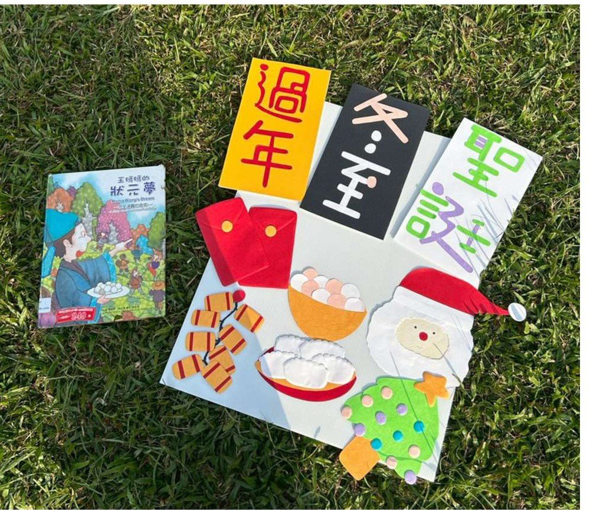

課程目標與學習指標
身-2-1 安全應用身體操控動作（身-大-2-1-1 在合作遊戲情境中練習動作的協調與敏捷）；社-1-6 認識生活環境中文化的多元現象（社-大-1-6-3）；語-2-2 以口語參與互動（語-大-2-2-3）
活動怎麼進行
引起動機
朗讀繪本《王媽媽的狀元夢》認識冬至與湯圓由來，出示主題板介紹冬季節慶，引導幼兒說出各節慶的標誌性人物與活動（聖誕節→聖誕老公公、過年→放鞭炮領紅包、冬至→吃湯圓）。
發展活動｜氣球傘煮湯圓
移動到戶外草地，幼兒依氣球傘顏色分組站位；先隨音樂感受快慢節奏，再合力搖動氣球傘「煮湯圓」（小布球）；進階挑戰：老師說出想吃的湯圓數量，幼兒要合作把多餘的布球彈出傘外、留下指定數量。
綜合活動
回教室分享：今天最有趣的部分？活動中怎麼合作、遇到什麼困難？你跟家人怎麼過冬至？
評量怎麼設計
- 工具：屏科大幼兒園主題評量檢核表「冬天過什麼節」——五個評量項目：能與他人合作完成任務／能表達對生活經驗的感受與個人看法／能配合音樂或節奏調整肢體動作／能協調控制大肌肉完成肢體動作活動／能主動參與節慶的相關活動。
- 分工：24 位幼兒分成 3 大組、每組 8 位，由組員分工觀察；輔以提問觀察回答與參與情形。
- 實施技巧：介紹完後在幼兒背後貼上號碼，便於戶外活動中辨識與記錄。
評量看見了什麼
- 過半數幼兒五項皆能達成，屬高表現；兩位幼兒達成項目較少，較為特殊或內向的幼兒主要卡在口語表達與身體操作。
- 引起動機階段幼兒看圖回答節慶反應熱烈；氣球傘人人喜歡，都能跟著節奏配合指令。
教學現場的即時調整
- 進階版「左右晃動」時發現部分幼兒左右概念尚不熟悉、無法統一晃動——立即調整引導回「上下大力擺動」，再試一次就成功。這是形成性評量「當場發現、當場調整」的實例。
這組的反思
- 幼兒在戶外大型活動中容易興奮，需要事先設計好收束機制。
- 大團體觀察必須靠分組分工，否則記錄不過來。
給現場老師的啟示
戶外大肢體活動也能做形成性評量——關鍵是把觀察項目寫清楚、把 24 個孩子拆給多位觀察者。「左右晃動失敗→改回上下」正是評量即時回饋教學的最好示範。
現場紀實


